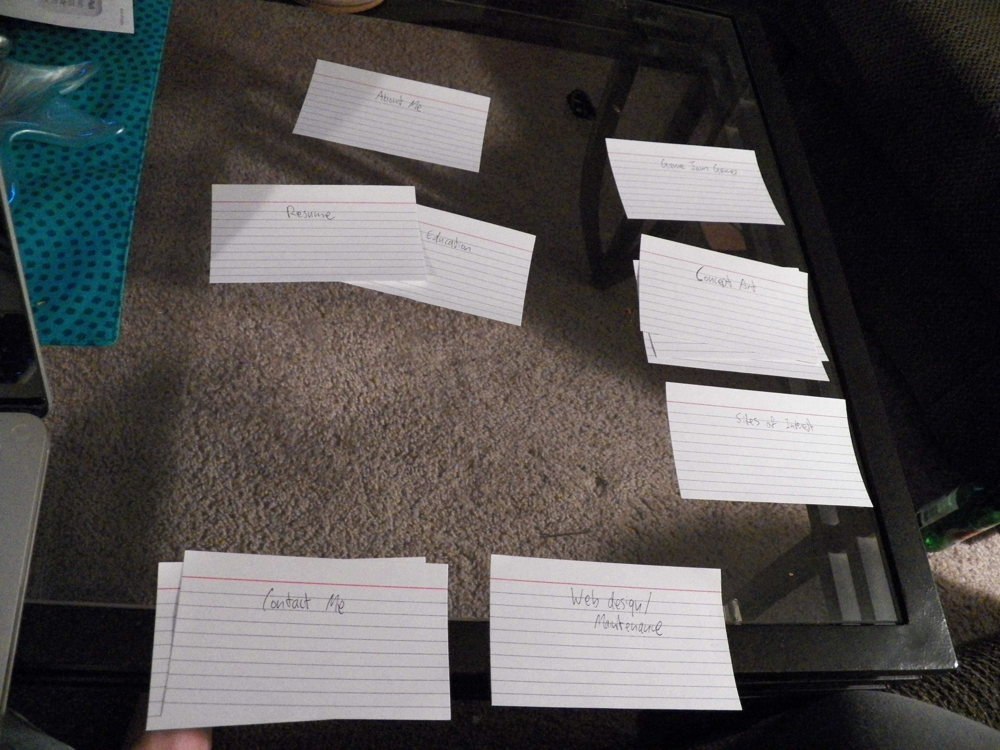

Card Sorting Data for My Site: Erin
The participant create her information hierarchy with the concept of it being structured as a website. She created three sections for the website: a Main Page, Sidebar, Footer. The Main Page content consisted of About Me information, which included my resume and My Education. The sidebar section would contain the About Me again, then would include links to my artwork, Games that I had made, and sites of interest. The footer would include information on how to contact me, social media links and my web design information (which was mistaken to be information about how to contact the web developer of the actual site; this name may need to be revised in the future).

| Erin: My Website Content |
First Section (main page) |
About Me |
|
Resume |
|
My Education |
|
Second Section (sidebar) |
About Me (link to main page) |
|
Game Jam Games |
Concept Art |
|
2D Artwork |
|
3D Artwork |
Sites of Interest |
|
Third Section (Footer) |
Contact Me |
|
Social Media Links |
Web Design and Maintenance |